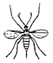
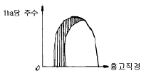

임업종묘기능사 (2006-04-02 기출문제)
1과목: 임의 구분
1. 접목작업에서 가장 중요하다고 할 수 있는 것은?
- 접수의 눈은 1∼2개, 길이는 4∼5㎝로 하고 형성층이 일치되도록 접착시킨다 .
- 접수의 눈은 3∼4개, 길이는 10∼20㎝로 하고 형성층이 일치되도록 접착시킨다 .
- 접수보다 대목의 굵기가 굵어야 한다.
- 접수와 대목의 굵기가 같아야 하며 수피를 일치시킨다.
(정답률: 알수없음)

2. 소나무 인공교배를 할 때, 교배봉지[交配袋]내의 제웅작업[除雄作業]은 왜 하는가?
- 불임성 종자의 생산을 방지하기 위하여
- 자식약세를 방지하기 위하여
- 임성종자의 다량생산을 위하여
- 자가교배[自配]를 방지하기 위하여
(정답률: 알수없음)
3. 묘포에 종자를 흩어뿌리기할 때의 합리적인 순서로 된 것은?
- 묘판만들기 → 로울러 → 파종 → 복토
- 묘판만들기 → 파종 → 로울러 → 복토 → 로울러
- 묘판만들기 → 파종 → 복토 → 로울러
- 묘판만들기 → 파종 → 복토
(정답률: 알수없음)
4. 우리나라에서 자생하는 여러 수종 및 도입수종에서 1대 잡종이 가장 현저한 잡종강세를 나타낸 수종은?
- 은백양과 미국 사시나무의 1대 잡종
- 황철나무와 물황철의 1대 잡종
- 미류나무와 은백양의 1대 잡종
- 미류나무와 황철나무의 1대 잡종
(정답률: 알수없음)
5. 다음은 솔노랑잎벌의 가해 형태를 설명한 것이다. 바르게 설명한 것은?
- 봄에 부화한 유충이 새로 나온 잎을 갉아 먹는다.
- 새순의 줄기에서 수액을 빨아 먹는다.
- 솔잎의 기부를 잘라서 먹는다.
- 전년도 잎을 끝에서부터 기부를 향하여 가해한다.
(정답률: 알수없음)
6. 다음 그림은 해충의 성충모형은 무슨 해충인가?

- 모기
- 솔잎혹파리
- 솔나방
- 솔껍질깍지벌레
(정답률: 알수없음)
7. 우리 나라 전국 산지 대부분에서 출현하는 토양은?
- 적황색산림토양
- 갈색산림토양
- 회갈색산림토양
- 화산회산림토양
(정답률: 알수없음)
8. 다음 종자 중 성숙기가 가장 이른 것은?
- 사시나무
- 은행나무
- 백합나무
- 주목
(정답률: 알수없음)
9. 은행을 채종하고 종자보관이 가장 잘된 것은?
- 종이로 싸서 얼지 않게 방안에 보관하였다.
- 후숙을 시키기 위하여 고온 건조상태를 유지시켰다 .
- 모래와 섞어 땅속에 묻었다.
- 채종하자마자 바로 파종하였다 .
(정답률: 알수없음)
10. 낙엽송의 m2당 파종량은?
- 15.2g
- 20.1g
- 35.8g
- 106.3g
(정답률: 알수없음)
11. 오동나무의 특징 중 옳지 않은 것은?
- 생장이 빠르다.
- 비중이 가볍다.
- 식재 후 굽게 자라는 경우, 지면 가까이에서 잘라내면 곧게 된다.
- 잎의 이면에 털이 없다.
(정답률: 알수없음)
12. 그림과 같은 구성을 보이는 동령임분에서 빗금친 부분을 간벌하였다면 어떠한 간벌방식이 적용된 것인가?

- 하층간벌
- 상층간벌
- 택벌식간벌
- 기계적간벌
(정답률: 알수없음)
13. 소나무에 주로 이용되는 접목법은?
- 절접법
- 박접법
- 할접법
- 설접법
(정답률: 알수없음)
14. 제1대 잡종[F1]이 양친 중 어느 한쪽의 형질만을 나타내는 것을 무엇이라고 하는가?
- 완전우성
- 불완전우성
- 부분우성
- 중간우성
(정답률: 알수없음)
15. 담자균류에 의해서 발생되는 수병[樹病]은?
- 소나무 잎떨림병
- 잣나무 털녹병
- 낙엽송 가지끝마름병
- 벚나무 빗자루병
(정답률: 알수없음)
16. 수하식재 수종으로 적합한 것은?
- 삼나무
- 소나무
- 낙엽송
- 참나무
(정답률: 알수없음)
17. 1-1 묘목에 대한 설명 중 옳은 것은?
- 생장이 불량한 2년생 묘목
- 한번 이식된 2년생 묘목
- 1년생의 침엽수 묘목
- 파종상에서 2년 지낸 묘목
(정답률: 알수없음)
18. 소나무 재선충병의 감염 경로는?
- 소나무 재선충병은 매개충인 담배장님노린재에 의해 감염된다.
- 소나무 재선충병의 병원균은 참나무류와 중간기주로 교대하는 이종 기생균이다 .
- 소나무 재선충병의 병원균은 잎의 기공을 통하여 침입하여 줄기로 전파된다.
- 소나무 재선충병은 매개충인 솔수염하늘소에 의해 감염된다.
(정답률: 알수없음)
19. 분근법으로 번식이 용이한 수종은?
- 단풍나무
- 밤나무
- 닥나무
- 목련
(정답률: 알수없음)
20. 다음 중 도태간벌에서 미래목 선정에 적당하지 않은 것은?
- 피압 받지 않는 나무
- 혼효림인 경우 목적으로 하는 수종
- 수관 및 수간에 관계없이 방해받지 않는 나무
- 형질이 우수한 나무
(정답률: 알수없음)
2과목: 임의 구분
21. 다음 중 밑깎기의 시기로 가장 적합한 시기는?
- 3∼4월
- 4∼5월
- 6∼8월
- 9∼10월
(정답률: 알수없음)
22. 다음 중 천연하종 갱신에 가장 안전한 작업법은?
- 중림작업
- 모수작업
- 개벌작업
- 산벌작업
(정답률: 알수없음)
23. 군상개벌 작업시 군상지의 크기는 3∼10a로 하는 데 보통 몇년 간격으로 다음 군상지를 벌채하는가?
- 2∼3년
- 4∼5년
- 6∼7년
- 8∼10년
(정답률: 알수없음)
24. 다음 수종 중 종자 선정시 수선법으로 정선해야 하는 수종으로 짝지은 것은?
- 칠엽수, 들메나무
- 삼나무, 주목
- 물푸레나무, 소나무
- 가래나무, 해송
(정답률: 알수없음)
25. 한 숲에 왜림과 교림을 동시에 세워두는 작업을 무슨 작업종이라 하는가?
- 산벌 작업
- 중림 작업
- 택벌 작업
- 개벌 작업
(정답률: 알수없음)
26. 포플러 잎녹병의 중간숙주는?
- 향나무
- 까치밥나무
- 낙엽송
- 송이풀
(정답률: 알수없음)
27. 종자의 결실주기가 5~7년인 수종은?
- 소나무
- 리기다소나무
- 해송
- 낙엽송
(정답률: 알수없음)
28. 등화유살로 가장 많이 구제할 수 있는 해충은?
- 거세미, 진딧물류
- 소나무좀, 바구미
- 어스렝이나방, 풍뎅이
- 응애, 측백하늘소
(정답률: 알수없음)
29. 다음 중 소나무류의 천공성 해충은?
- 소나무좀
- 소나무왕진딧물
- 솔껍질깍지벌레
- 잣나무넓적잎벌
(정답률: 알수없음)
30. 곰팡이[균류]의 기관은 영양기관과 번식기관으로 나눌 수 있다. 다음 중 번식기관이 아닌 것은?
- 균핵
- 포자
- 자낭반
- 버섯
(정답률: 알수없음)
31. 환경조건에 의해서 나타나는 변이가 아닌 것은?
- 유전성
- 토성
- 밀도
- 임분상태
(정답률: 알수없음)
32. 다음 중 나무의 특성에 바르게 설명한 것은 ?
- 나무의 특성은 토양과 유전형에 의하여 결정된다.
- 나무의 특성은 환경과 표현형에 의하여 결정된다.
- 나무의 특성은 환경과 유전형에 의하여 결정된다.
- 나무의 특성은 기후와 유전형에 의하여 결정된다.
(정답률: 알수없음)
33. 집단선발육종방법에서 우수한 유전자형을 가진 임목을 일단 표현형에 의해서 선발했을때 이 개체를 무엇이라 하는가?
- 모수
- 우세목
- 수형목
- 열세목
(정답률: 알수없음)
34. 종자 저장의 장점이 아닌 것은?
- 발아 촉진
- 종자를 먹는 동물로부터 보호
- 유전형질의 변형
- 흉년에 대한 대비
(정답률: 알수없음)
35. 유럽 원산으로 우리나라에 도입되어 식재되고 있는 나무는?
- 히말라야시이더
- 리기다소나무
- 독일가문비나무
- 낙엽송
(정답률: 알수없음)
36. 종자를 조제할 때 육질의 외종피를 제거하므로 불완전 종자라 할 수 있는 것은?
- 소나무
- 플라타너스
- 밤나무
- 은행나무
(정답률: 알수없음)
37. 전나무, 일본잎갈나무, 가문비나무 종자는 건조밀봉 저장을 한다. 이 때 저장온도는 몇 도가 가장 적당한가?
- -10℃∼-5℃
- -2℃∼-10℃
- +5℃∼+3℃
- 0℃∼+2℃
(정답률: 알수없음)
38. 다음은 종자 추파의 장점이 아닌 것은?
- 종자의 저장처리가 필요 없어 노동력을 분배시킬 수있다.
- 우량한 묘목의 생산이 가능하다.
- 발아력이 억제되기 쉬운 종자에 적합하다.
- 해토 즉시 발아하게 되므로 생장이 왕성하다.
(정답률: 알수없음)
39. 무성번식에 의한 묘목양성 방법 중 취목인 것은?
- 단풍취목
- 공간취목
- 파상취목
- 파종취목목
(정답률: 알수없음)
40. 묘포 면적 중 실면적은 전면적의 몇 % 인가?
- 30∼40%
- 50∼60%
- 60∼70%
- 80∼90%
(정답률: 알수없음)
3과목: 임의 구분
41. 수목종자 중 단백질, 지방이 주성분인 종자의 탈각은 어떻게 처리하는 것이 가장 적당한가?
- 양달건조하여 탈각한다.
- 응달건조하여 탈각한다.
- 부숙법으로 탈각한다.
- 유궤법으로 탈각한다.
(정답률: 알수없음)
42. 인공 조림지에서 해송이나 잣나무 등의 1㏊당 식재 본수는 얼마 정도가 실시되는가?
- 1,000본
- 2,000본
- 3,000본
- 4,000본
(정답률: 알수없음)
43. 종자 저장시 정선 후 곧바로 노천매장해야 하는 수종으로 짝지은 것은?
- 층층나무, 전나무
- 삼나무, 편백
- 소나무, 해송
- 느티나무, 잣나무
(정답률: 알수없음)
44. 다음 중 개화결실을 촉진하는 방법이 아닌 것은?
- 수피를 벗겨 준다.
- 철사로 줄기를 감아 준다.
- 제웅을 해 준다.
- 환상박피[環狀剝皮]를 한다.
(정답률: 알수없음)
45. 우리나라 중부 이북지방에서 많이 자라고 있는 수종으로 목재는 연하고 가벼우며 목공용으로 적당하다. 또 꽃에서는 꿀을 딸 수 있어 밀원 식물로도 이용되는 수종은?
- 피나무
- 아카시아나무
- 귀룽나무
- 물박달나무
(정답률: 알수없음)
46. 미국 원산으로 생장이 빠르며 사방조림, 연료재생산, 밀원 수목으로 적합한 수종은?
- 싸리나무
- 피나무
- 아카시아
- 이팝나무
(정답률: 73%)
47. 다음 설명들은 산림 내의 낙엽을 채취하게 되므로 나타나는 피해이다. 거리가 가장 먼 것은?
- 낙엽채취는 산불 발생의 주요 원인이 된다.
- 낙엽채취는 토양의 양분을 약탈한다.
- 낙엽채취는 생태계의 균형을 깨뜨린다.
- 낙엽채취는 회복하기 어려운 삼림의 황폐를 초래한다.
(정답률: 알수없음)
48. 밤나무 줄기마름병, 포플러 줄기마름병 등의 병원체는 다음의 어느 침입방법으로 침입하는가 ?
- 각피 침입
- 상처를 통한 침입
- 자연개구[開口]를 통한 침입
- 화기[花器]침입
(정답률: 알수없음)
49. 나무를 심는 순서로서 가장 옳게 된 것은?
- 구덩이 파기-낙엽제거-묘목넣기-밟기-잡초제거
- 잡초제거-구덩이 파기-뿌리펴기-흙덮기-낙엽덮기
- 구덩이 파기-묘목넣기-밟기-잡초제거-낙엽제거
- 낙엽제거-잡초제거-구덩이 파기-묘목넣기-밟기
(정답률: 알수없음)
50. 숲땅 비배의 효과로 거리가 먼 것은?
- 근계의 발육이 빨라지고, 건조에 대해서도 저항력이 생긴다.
- 나무의 생장이 촉진될 뿐 아니라, 잡초의 생장이 빨라져 밑깎기 기간이 길어진다.
- 숲이 빨리 울창해져 겉흙의 유실을 막는 효과가 크다.
- 숲이 빨리 울창해져 낙엽량이 증가하여 숲땅의 성질을 개량하는데 도움을 준다.
(정답률: 알수없음)
51. 채종림(또는 모수림)의 설명에 있어서 그 뜻이 불합리한 것은?
- 채종림은 수형목의 접목묘로 만든다.
- 채종림에서는 우량종자를 얻을 수 있다.
- 우리나라에서는 채종림을 설정하고 있다.
- 채종림은 어느 정도의 면적을 가지고 있어야 한다.
(정답률: 알수없음)
52. 간벌시에 4급목과 5급목이 전부 벌채되는 간벌은?
- A종간벌[약간간벌]
- B종간벌[중도간벌]
- C종간벌[강도간벌]
- D종간벌[상층간벌]
(정답률: 알수없음)
53. 임업상 사용할 종자의 산지조건에 대한 기술 중 옳지 않은 것은?
- 조림지에 인접한 동일 입지 조건의 모수에서 채종
- 조림지와 유사한 입지조건을 구비한 지역의 모수에서 채종
- 가급적 조림지와 멀리 떨어져 있는 지역의 모수에서 채종
- 조림지내에 있는 모수에서 채종
(정답률: 알수없음)
54. 다음 중 일의 순서가 올바르게 되어 있는 것은?
- 제벌 - 밑깎기 - 간벌 - 가지치기
- 밑깎기 - 제벌 - 가지치기 - 간벌
- 가지치기 - 밑깎기 - 간벌 - 제벌
- 간벌 - 밑깎기 - 제벌 - 가지치기
(정답률: 알수없음)
55. 회양목 종자의 비율을 50.0%, 1g당 종자알수를 200, 가을이 되어 1m2에 남길 묘목수를 800그루, 득묘율이 0.5라고할 때 m2당 파종율은?
- 14g
- 16g
- 20g
- 25g
(정답률: 알수없음)
56. 묘목이 어느정도 자라서 목화된 후에 뿌리가 침해되어 암갈색으로 변하며 썩는 모잘록병은 ?
- 도복형
- 지중부패형
- 수부형
- 근부형
(정답률: 알수없음)
57. 다음 중 도입수종이 아닌 것은?
- 리기다 소나무
- 이태리 포플러
- 잎갈나무
- 낙엽송
(정답률: 알수없음)
58. 솔나방의 월동형태와 월동장소로 짝지어진 것 중 옳은 것은?
- 알 - 낙엽밑
- 유충 - 솔잎
- 유충 - 낙엽밑
- 번데기 - 나무껍질
(정답률: 알수없음)
59. 침엽수의 가지를 제거하는 방법으로 가장 옳은 것은?
- 가지가 뻗은 방향으로 직각되게 자른다.
- 수간에 평행하게 자른다.
- 가지 밑살의 끝부분에서 자른다.
- 수간에 오목한 자국이 생기게 자른다.
(정답률: 알수없음)
60. 응애를 죽일 수 있는 약제를 무엇이라 부르는가?
- 살충제
- 살균제
- 살비제
- 살서제
(정답률: 알수없음)